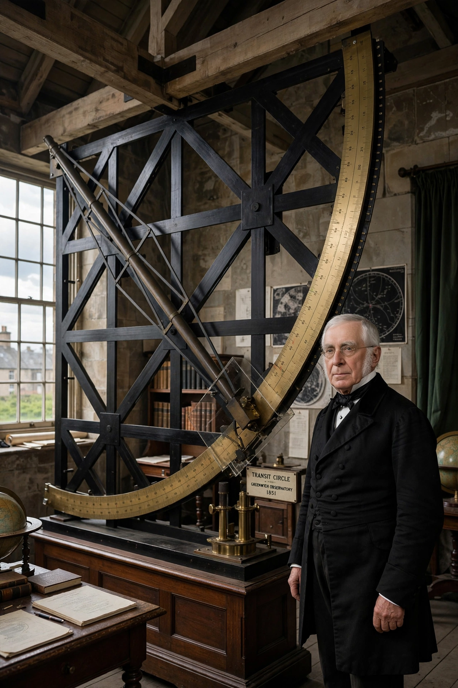

| Sir George Biddell Airy | |
|---|---|
| Born | 27 July 1801, Alnwick, Northumberland, England |
| Died | 2 January 1892 (aged 90), Greenwich, London |
| Office | 7th Astronomer Royal (1835–1881) |
| Known for | Airy disk; Airy functions; prime meridian at Greenwich; isostasy |
| Education | Trinity College, Cambridge (Senior Wrangler) |

Sir George Biddell Airy (27 July 1801 – 2 January 1892) was an English mathematician and astronomer, the seventh Astronomer Royal, serving from 1835 to 1881. A formidable organiser, he reorganised the Royal Observatory, Greenwich on factory-like principles, installed the Airy Transit Circle (1851) whose axis defined the prime meridian adopted internationally in 1884, and standardised time distribution — the origin of Greenwich Mean Time.
Airy graduated as Senior Wrangler from Trinity College, Cambridge, became Lucasian Professor at 24 and Plumian Professor and director of the Cambridge Observatory at 26. At Greenwich he systematised observation and publication, developed methods for computing planetary motions, and investigated the mean density of the Earth by pendulum experiments in mines. In optics his name attaches to the Airy disk (the diffraction pattern of a point source) and the Airy functions of mathematics. He proposed the Airy model of isostasy, in which mountain ranges have deep crustal "roots".
Airy's reputation suffered from the discovery of Neptune: in 1846 he failed to act decisively on John Couch Adams's prediction of a new planet, and Johann Galle found Neptune first from Urbain Le Verrier's calculations. He nevertheless transformed the Greenwich institution inherited from predecessors such as James Bradley, and was succeeded in 1881 by William Christie; later holders included Frank Watson Dyson and Harold Spencer Jones.